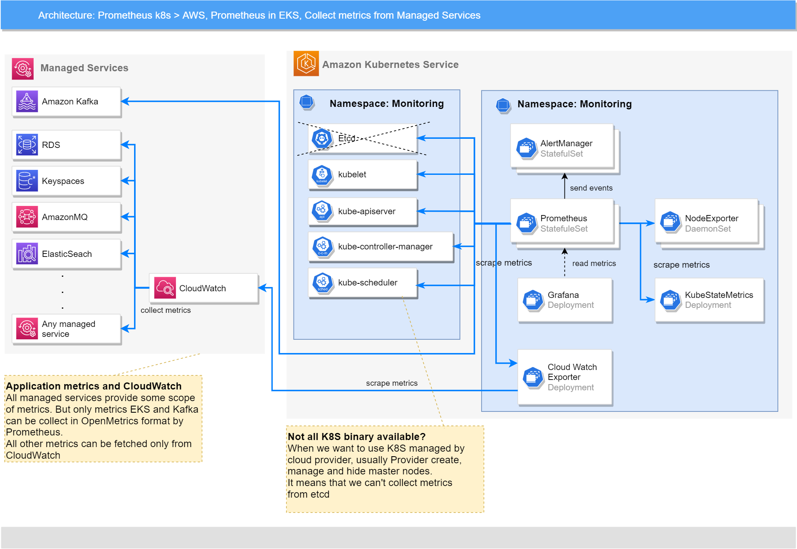

This document provides information about various integration options with AWS monitoring tools and managed services.
AWS CloudWatch¶
Supported features matrix:
| Monitoring System | Metrics | Dashboards | Alerting | Autoscaling |
|---|---|---|---|---|
| Amazon CloudWatch | ✓ Yes | ✗ No | ✗ No | ✗ No |
| Amazon Managed Prometheus | ✓ Yes | - | ✓ Yes | - |
| Amazon Managed Grafana | - | ✓ Yes | - | - |
Legend:
Yes- The feature is supported and implemented.No- The feature is not supported by the target monitoring system.-- The feature is not applicable.
Integration between AWS CloudWatch or AWS Managed Prometheus and Monitoring Stack should be configured before deploying Monitoring, and it is required to set the correct deployment parameters to enable the necessary features.
Get Metrics from AWS CloudWatch¶
The following image describes how platform monitoring is integrated with Amazon CloudWatch.

In general, the ability to collect metrics from CloudWatch is provided, which it collects from other AWS Managed Services. These metrics are collected by Prometheus and can be used for showing metrics and alerting in Grafana and AlertManager.
CloudWatch Metrics¶
Integration of platform monitoring with AWS CloudWatch takes place through the CloudWatch Exporter. For more information, refer to https://github.com/prometheus/cloudwatch_exporter.
How to Configure CloudWatch Exporter¶
To configure the CloudWatch Exporter, choose the managed services which you want to monitor, and then choose
the metrics that can be useful for your purposes from the monitoring section of the official documentation
for the managed service.
The following table contains links to some AWS managed services that can be useful to collect metrics. If the table doesn't contain the required managed service, you can the find the necessary metrics in the official AWS documentation at https://docs.aws.amazon.com/.
Note: You can get a full list of metrics for your environment and for a specific managed service using the Amazon CLI command.
aws cloudwatch list-metrics # should print all metrics and them dimensions for selected environment
aws cloudwatch list-metrics --namespace <namespace> # should print metrics for specified namespace and them dimensions for selected environment
For the full list of flags and examples, refer to the AWS CLI Reference at https://awscli.amazonaws.com/v2/documentation/api/latest/reference/cloudwatch/list-metrics.html.
Note: For Kafka, Amazon provides the ability to collect OpenMetrics. For more information, refer to https://docs.aws.amazon.com/msk/latest/developerguide/open-monitoring.html.
Examples of cloudwatch-exporter configuration for some managed services:
-
ALBmetrics: - aws_namespace: AWS/ApplicationELB aws_metric_name: UnHealthyHostCount aws_dimensions: [TargetGroup, LoadBalancer] aws_statistics: [Maximum] - aws_namespace: AWS/ApplicationELB aws_metric_name: UnHealthyHostCount aws_dimensions: [TargetGroup, LoadBalancer, AvailabilityZone] aws_statistics: [Maximum] - aws_namespace: AWS/ApplicationELB aws_metric_name: ActiveConnectionCount aws_dimensions: [TargetGroup, LoadBalancer] aws_statistics: [Average] -
S3
The configuration must contain metrics (with statistics, dimensions, and so on) that you want to see in Prometheus. The official AWS documentation has information about each metric, the most useful statistics for it, and the possible sets of dimensions.
Important: If a metric has different sets of dimensions, the configuration should contain each variant of the metric
with its own set of dimensions. In other words, the RequestCount metric with TargetGroup and
LoadBalancer dimensions, and the same metric RequestCount with only the LoadBalancer dimension, are different metrics
that should be placed as two different list items in the configuration. One metric with two different statistics
also should be written as two different list items.
This configuration in the YAML format should be placed as a value for the .Values.cloudwatchExporter.config
parameter. For more information, refer to the
cloudwatch-exporter section.
Examples of configuration files for cloudwatch-exporter by namespace (these configurations can be used as-is):
How to Setup Monitoring in CloudWatch¶
There are no any specific steps or parameters for deploying monitoring in AWS EKS.
To deploy monitoring in AWS, refer to the Platform Monitoring Installation Procedure
How to Setup Metrics Collection from CloudWatch¶
This section describe how to configure metrics collection from AWS CloudWatch and the steps that are to be executed before the deployment.
Credentials and Permissions¶
CloudWatch Exporter uses the AWS Java SDK. For more information, see
http://docs.aws.amazon.com/AWSSdkDocsJava/latest/DeveloperGuide/welcome.html.
The AWS Java SDK offers a variety of ways to provide credentials. For more information, see
http://docs.aws.amazon.com/AWSSdkDocsJava/latest/DeveloperGuide/credentials.html.
This includes the AWS_ACCESS_KEY_ID and AWS_SECRET_ACCESS_KEY environment variables.
There are two ways to use cloudwatch-exporter in the EKS cluster: using an IAM role (recommended) or an IAM user.
Using an IAM Role (recommended)¶
You can use an IAM role for Kubernetes service accounts to allow pods in EKS clusters using AWS services without giving open entry details as AWS access key ID and AWS secret access key.
In general, instructions for configuring roles for service accounts are described in the official documentation in the IAM roles for service accounts section at https://docs.aws.amazon.com/eks/latest/userguide/iam-roles-for-service-accounts.html.
This section is similar to Set up IAM Roles for Service Accounts, but describes how to create a role for cloudwatch-exporter in a more detailed manner.
To create and use an IAM role for the cloudwatch-exporter service account:
Step 1. Make sure that an IAM OIDC provider is connected to the EKS cluster, or create one. For more information to create an IAM OIDC provider for your cluster, see https://docs.aws.amazon.com/eks/latest/userguide/enable-iam-roles-for-service-accounts.html.
You can also determine whether you have an existing IAM OIDC provider for your cluster using an AWS console:
Navigate to EKS > Clusters > your cluster > Details > if OpenID Connect provider URL has a URL, go to the
next step.
Step 2. Create IAM policies for cloudwatch-exporter to access CloudWatch.
Step 2.1. The cloudwatch:ListMetrics, cloudwatch:GetMetricStatistics, and cloudwatch:GetMetricData
IAM permissions are required, so you can create a policy like the following
(for example, named CloudWatchExporterMonitoring):
{
"Version": "2012-10-17",
"Statement": [
{
"Sid": "VisualEditor0",
"Effect": "Allow",
"Action": [
"cloudwatch:GetMetricData",
"cloudwatch:GetMetricStatistics",
"cloudwatch:ListMetrics"
],
"Resource": "*"
}
]
}
Step 2.2. (Optional) The tag:GetResources IAM permission is also required to use the aws_tag_select feature.
Important: The tag:GetResources permission is required to access Resource Groups and Tagging endpoints, like
tagging.<region>.amazonaws.com, which doesn't work with VPC. So the aws_tag_select feature does not work with VPC.
For the full list of endpoints available in VPC, refer to the official documentation at
https://docs.aws.amazon.com/vpc/latest/privatelink/integrated-services-vpce-list.html.
If required, use the following policy (for example, named CloudWatchExporterMonitoringTags):
{
"Version": "2012-10-17",
"Statement": [
{
"Sid": "VisualEditor0",
"Effect": "Allow",
"Action": [
"tag:GetResources"
],
"Resource": "*"
}
]
}
Step 3. Create an IAM role for ServiceAccount. For more information, see https://docs.aws.amazon.com/eks/latest/userguide/associate-service-account-role.html.
Step 3.1. To find the AWS account ID, navigate to AWS console > IAM. You can find the AWS account ID in the AWS account section.
Alternatively, run the following command in the AWS CLI:
Let us assume that the account ID is placed in the account_id variable.
Step 3.2. To find the OpenID Connect provider for your EKS cluster, navigate to AWS console > EKS.
You can find the OIDC provider in the Details section. Copy this value without
https:// prefix (format: oidc.eks.<region>.amazonaws.com/id/<cluster_id>).
Alternatively, run the following command in the AWS CLI. Replace my-cluster with the name of your cluster:
oidc_provider=$(aws eks describe-cluster --name my-cluster --region $AWS_REGION --query "cluster.identity.oidc.issuer" --output text | sed -e "s/^https:\/\///")
Let us assume that the OpenID Connect provider is placed in the oidc_provider variable.
Step 3.3. Let us assume that the service account name for cloudwatch-exporter is placed in the service_account
variable and namespace for cloudwatch-exporter is placed in the namespace variable,
and execute the following commands for the AWS CLI:
export namespace=<cloudwatch_exporter_namespace>
export service_account=<cloudwatch_exporter_service_account_name>
Step 3.4. Create an IAM role using the AWS console. Navigate to IAM > Roles > Create role.
- Select
Custom trust policyand use the following JSON, which replaces all "variables" starting with$with the corresponding values from the previous steps:
{
"Version": "2012-10-17",
"Statement": [
{
"Effect": "Allow",
"Principal": {
"Federated": "arn:aws:iam::$account_id:oidc-provider/$oidc_provider"
},
"Action": "sts:AssumeRoleWithWebIdentity",
"Condition": {
"StringEquals": {
"$oidc_provider:aud": "sts.amazonaws.com",
"$oidc_provider:sub": "system:serviceaccount:$namespace:$service_account"
}
}
}
]
}
- Select the policies for cloudwatch-exporter access to CloudWatch created in Step 2.
(For example,
CloudWatchExporterMonitoringand (optional)CloudWatchExporterMonitoringTags). - Enter a name for the role (for example,
CloudWatchExporterServiceAccount), a description, check the other details. ClickCreate role.
Step 4. Deploy monitoring-operator with cloudwatch-exporter and add the following annotation to the created
service account by using the .Values.cloudwatchExporter.serviceAccount.annotations parameter or manually:
Example of parameters during the deployment:
cloudwatchExporter:
...
serviceAccount:
annotations:
eks.amazonaws.com/role-arn: arn:aws:iam::$account_id:role/$iam_role
Where, $account_id is the AWS account ID (Step 3.1.) and $iam_role is the name of the role created in Step 3.4.
(for example, CloudWatchExporterServiceAccount).
Step 5. (Optional) In some cases, you may need to configure the AWS Security Token Service endpoint for a service account. For more information, see https://docs.aws.amazon.com/eks/latest/userguide/configure-sts-endpoint.html.
In general, if the Kubernetes version of your cluster is 1.22 or higher, STS endpoint type should be configured as
Regional. Otherwise, the endpoint type should be configured as Global.
To use the Regional type, add the following annotation to the service account:
Example of parameters during the deployment:
cloudwatchExporter:
...
serviceAccount:
annotations:
eks.amazonaws.com/role-arn: arn:aws:iam::$account_id:role/$iam_role
eks.amazonaws.com/sts-regional-endpoints: true
Otherwise, replace true with false.
Using an IAM User¶
You can use an IAM user to give permissions to cloudwatch-exporter.
Firstly, you should create IAM policies for access to CloudWatch. The cloudwatch:ListMetrics,
cloudwatch:GetMetricStatistics, and cloudwatch:GetMetricData IAM permissions are required.
Role in JSON:
{
"Version": "2012-10-17",
"Statement": [
{
"Sid": "VisualEditor0",
"Effect": "Allow",
"Action": [
"cloudwatch:GetMetricData",
"cloudwatch:GetMetricStatistics",
"cloudwatch:ListMetrics"
],
"Resource": "*"
}
]
}
Important: The tag:GetResources permission is required to access to Resource Groups and Tagging endpoints, like
tagging.<region>.amazonaws.com, which doesn't work with VPC. So the aws_tag_select feature does not work with VPC.
For the full list of endpoints available in VPC, see
https://docs.aws.amazon.com/vpc/latest/privatelink/integrated-services-vpce-list.html.
The tag:GetResources IAM permission is also required to use the aws_tag_select feature:
{
"Version": "2012-10-17",
"Statement": [
{
"Sid": "VisualEditor0",
"Effect": "Allow",
"Action": [
"tag:GetResources"
],
"Resource": "*"
}
]
}
IAM permissions can be added directly to a user or you can first create Policies, Groups, and then add the earlier created group to the user.
To create a user:
- Open IAM, and select Users.
- Click
Add Users. - Enter the user name and do not forget to set
Access key - Programmatic accessto generate the access key. - Select the earlier created group or permissions.
- Create the user and save the
Access Key IDandSecret Access Key.
Then manually create a Kubernetes secret with credentials in the namespace for cloudwatch-exporter. The secret
must contain the aws_access_key_id field with AWS the access key ID and the aws_secret_access_key field
with the Secret access key. In this case, set the name of the created secret in the .aws.secret.name
parameter during the deployment.
Otherwise, you can specify the AWS access key ID and Secret access key directly using .aws.aws_access_key_id and
.aws.aws_secret_access_key parameters during the deployment.
VPC Endpoint Configuration¶
Important: This is a very important step if you are using a Virtual Private Cloud (VPC)
Without a VPC endpoint for CloudWatch, the exported data cannot get access to its endpoint (non-global, non-regional).
You have to configure a VPC endpoint for CloudWatch if you are using VPC in AWS.
For more information about VPC, see https://docs.aws.amazon.com/vpc/latest/userguide/what-is-amazon-vpc.html.
To add a VPC endpoint:
- Use AWS Console and navigate to
VPC. - Open
Virtual Private Cloud > Endpoints. - Check the
Service Namecolumn whethercom.amazonaws.<region>.monitoringalready exists. If yes, then skip the following steps. - Click
Create Endpoint. -
Select:
-
Click
Create Endpoint.
Warning: A typical mistake made when creating a VPC endpoint is the wrong Security Group. You should specify the group which allows the pod in AWS EKS to get access to the VPC endpoint.
Deploy cloudwatch-exporter in AWS¶
Important: Note that .cloudwatchExporter.config below contains a very simple example.
You should specify the list of metrics and dimensions that you have to get from CloudWatch.
For the lists of full metrics, refer to CloudWatch Metrics.
Note: Pay attention to the settings that can be specified under the cloudwatchExporter.config parameter, such as,
These parameters are very important to get the actual metrics from CloudWatch without a delay. The default value of
delay_seconds is 600 s, and this parameter is used to avoid collecting data that has not fully converged.
600 s specifies that the exporter fetches data only after 600 s = 10 m. To decrease the delay, it is recommended
to decrease the value to 60 s. This time is enough for CloudWatch to collect the metrics and allows
cloudwatch_exporter to fetch them.
Refer to the official documentation of cloudwatch_exporter for full descriptions of all parameters at https://github.com/prometheus/cloudwatch_exporter#configuration.
To deploy Monitoring with cloudwatch-exporter, the following parameters have to be added in the deployment:
cloudwatchExporter:
install: true
resources:
limits:
cpu: 200m
memory: 256Mi
requests:
cpu: 100m
memory: 128Mi
aws:
aws_access_key_id: <access_key_id>
aws_secret_access_key: <secret_access_key>
config: |-
# This is the default configuration for prometheus-cloudwatch-exporter
region: us-east-1
period_seconds: 120
delay_seconds: 60
metrics:
### PostgreSQL
- aws_namespace: AWS/RDS
aws_metric_name: DatabaseConnections
aws_dimensions: [DBInstanceIdentifier]
aws_statistics: [Average]
- aws_namespace: AWS/RDS
aws_metric_name: DiskQueueDepth
aws_dimensions: [DBInstanceIdentifier]
aws_statistics: [Average]
How to Check CloudWatch Integration¶
If all settings are specified correctly and all users have correct permissions as a result in Prometheus, the collected metrics are displayed.
All metrics that Prometheus collects from cloudwatch-exporter has names starting from aws_,
nd the name of a metric is constructed as:
For example:
In general, you can just find metrics which start from aws_ in the Prometheus UI and check that they
exist.
Send Metrics in AWS CloudWatch¶
TBD
Grafana Dashboards¶
This section describes examples grafana dashboards and cloudwatch-exporter configuration for it.
Services:
- AWS/EFS
- AWS/EBS
- AWS/S3
- AWS/ClassicELB
- AWS/ApplicationELB
- AWS/NetworkELB
- AWS/RabbitMQ
- AWS/Cassandra
NOTE: You can include it into cloudwatch-exporter configmap in namespace where monitoring-operator installed.
During installation, you can use parameters:
cloudwatchExporter:
install: true
config: |-
region: ${CLOUDWATCH_REGION}
period_seconds: 120
delay_seconds: 60
metrics:
<Put there list of configuration from below examples.>
NOTE: You can use those examples with cloudwatch-exporter configuration which contains all metrics from AWS Cloudwatch for each service.
Read installation guide cloudwatch-exporter section for details.
EFS¶
AWS EFS dashboard required following Cloudwatch-exporter configuration:
region: us-east-1
period_seconds: 120
delay_seconds: 60
metrics:
### EFS
- aws_dimensions: [FileSystemId]
aws_metric_name: PercentIOLimit
aws_namespace: AWS/EFS
aws_statistics: [Average]
- aws_dimensions: [FileSystemId]
aws_metric_name: BurstCreditBalance
aws_namespace: AWS/EFS
aws_statistics: [Average]
- aws_dimensions: [FileSystemId]
aws_metric_name: MeteredIOBytes
aws_namespace: AWS/EFS
aws_statistics: [Sum]
- aws_dimensions: [FileSystemId]
aws_metric_name: TotalIOBytes
aws_namespace: AWS/EFS
aws_statistics: [Sum]
- aws_dimensions: [FileSystemId]
aws_metric_name: DataReadIOBytes
aws_namespace: AWS/EFS
aws_statistics: [Sum]
- aws_dimensions: [FileSystemId]
aws_metric_name: DataWriteIOBytes
aws_namespace: AWS/EFS
aws_statistics: [Sum]
- aws_dimensions: [FileSystemId]
aws_metric_name: MetadataIOBytes
aws_namespace: AWS/EFS
aws_statistics: [Sum]
- aws_dimensions: [FileSystemId]
aws_metric_name: ClientConnections
aws_namespace: AWS/EFS
aws_statistics: [Sum]
- aws_dimensions: [FileSystemId, StorageClass]
aws_metric_name: StorageBytes
aws_namespace: AWS/EFS
aws_statistics: [Average]
EBS¶
AWS EBS dashboard required following Cloudwatch-exporter configuration:
region: us-east-1
period_seconds: 120
delay_seconds: 60
metrics:
### EBS
- aws_dimensions: [VolumeId]
aws_metric_name: VolumeReadBytes
aws_namespace: AWS/EBS
aws_statistics: [Sum]
- aws_dimensions: [VolumeId]
aws_metric_name: VolumeWriteBytes
aws_namespace: AWS/EBS
aws_statistics: [Sum]
- aws_dimensions: [VolumeId]
aws_metric_name: VolumeReadOps
aws_namespace: AWS/EBS
aws_statistics: [Sum]
- aws_dimensions: [VolumeId]
aws_metric_name: VolumeWriteOps
aws_namespace: AWS/EBS
aws_statistics: [Sum]
- aws_dimensions: [VolumeId]
aws_metric_name: VolumeTotalReadTime
aws_namespace: AWS/EBS
aws_statistics: [Sum]
- aws_dimensions: [VolumeId]
aws_metric_name: VolumeTotalWriteTime
aws_namespace: AWS/EBS
aws_statistics: [Sum]
- aws_dimensions: [VolumeId]
aws_metric_name: BurstBalance
aws_namespace: AWS/EBS
aws_statistics: [Average]
S3¶
AWS S3 dashboard required following Cloudwatch-exporter configuration:
region: us-east-1
period_seconds: 120
delay_seconds: 60
metrics:
### S3
- aws_dimensions: [StorageType, BucketName]
aws_metric_name: BucketSizeBytes
aws_namespace: AWS/S3
aws_statistics: [Average]
- aws_dimensions: [StorageType, BucketName]
aws_metric_name: NumberOfObjects
aws_namespace: AWS/S3
aws_statistics: [Average]
Classic ELB¶
AWS classic ELB dashboard required following Cloudwatch-exporter configuration:
region: us-east-1
period_seconds: 120
delay_seconds: 60
metrics:
### Classic ELB
- aws_dimensions: [AvailabilityZone, LoadBalancer]
aws_metric_name: HealthyHostCount
aws_namespace: AWS/ELB
aws_statistics: [Maximum]
- aws_dimensions: [AvailabilityZone, LoadBalancer]
aws_metric_name: UnHealthyHostCount
aws_namespace: AWS/ELB
aws_statistics: [Minimum]
- aws_dimensions: [AvailabilityZone, LoadBalancer]
aws_metric_name: Latency
aws_namespace: AWS/ELB
aws_statistics: [Sum]
- aws_dimensions: [AvailabilityZone, LoadBalancer]
aws_metric_name: RequestCount
aws_namespace: AWS/ELB
aws_statistics: [Sum]
- aws_dimensions: [AvailabilityZone, LoadBalancer]
aws_metric_name: HTTPCode_ELB_4XX
aws_namespace: AWS/ELB
aws_statistics: [Sum]
- aws_dimensions: [AvailabilityZone, LoadBalancer]
aws_metric_name: HTTPCode_ELB_5XX
aws_namespace: AWS/ELB
aws_statistics: [Sum]
- aws_dimensions: [AvailabilityZone, LoadBalancer]
aws_metric_name: BackendConnectionErrors
aws_namespace: AWS/ELB
aws_statistics: [Sum]
- aws_dimensions: [AvailabilityZone, LoadBalancer]
aws_metric_name: SpilloverCount
aws_namespace: AWS/ELB
aws_statistics: [Sum]
Application ELB¶
AWS application ELB dashboard required following Cloudwatch-exporter configuration:
region: us-east-1
period_seconds: 120
delay_seconds: 60
metrics:
### Application ELB
- aws_namespace: AWS/ApplicationELB
aws_metric_name: ActiveConnectionCount
aws_dimensions: [AvailabilityZone, LoadBalancer]
aws_statistics: [Sum]
- aws_namespace: AWS/ApplicationELB
aws_metric_name: ConsumedLCUs
aws_dimensions: [LoadBalancer]
aws_statistics: [Sum]
- aws_namespace: AWS/ApplicationELB
aws_metric_name: HTTPCode_ELB_4XX_Count
aws_dimensions: [AvailabilityZone, LoadBalancer]
aws_statistics: [Sum]
- aws_namespace: AWS/ApplicationELB
aws_metric_name: HTTPCode_ELB_5XX_Count
aws_dimensions: [AvailabilityZone, LoadBalancer]
aws_statistics: [Sum]
- aws_namespace: AWS/ApplicationELB
aws_metric_name: ProcessedBytes
aws_dimensions: [AvailabilityZone, LoadBalancer]
aws_statistics: [Sum]
- aws_namespace: AWS/ApplicationELB
aws_metric_name: RequestCount
aws_dimensions: [TargetGroup, LoadBalancer, AvailabilityZone]
aws_statistics: [Sum]
- aws_namespace: AWS/ApplicationELB
aws_metric_name: RejectedConnectionCount
aws_dimensions: [AvailabilityZone, LoadBalancer]
aws_statistics: [Sum]
- aws_namespace: AWS/ApplicationELB
aws_metric_name: HealthyHostCount
aws_dimensions: [TargetGroup, LoadBalancer, AvailabilityZone]
aws_statistics: [Minimum]
- aws_namespace: AWS/ApplicationELB
aws_metric_name: UnHealthyHostCount
aws_dimensions: [TargetGroup, LoadBalancer, AvailabilityZone]
aws_statistics: [Maximum]
- aws_namespace: AWS/ApplicationELB
aws_metric_name: ELBAuthSuccess
aws_dimensions: [AvailabilityZone, LoadBalancer]
aws_statistics: [Sum]
- aws_namespace: AWS/ApplicationELB
aws_metric_name: ELBAuthLatency
aws_dimensions: [AvailabilityZone, LoadBalancer]
aws_statistics: [Sum]
- aws_namespace: AWS/ApplicationELB
aws_metric_name: ELBAuthError
aws_dimensions: [AvailabilityZone, LoadBalancer]
aws_statistics: [Sum]
- aws_namespace: AWS/ApplicationELB
aws_metric_name: ELBAuthFailure
aws_dimensions: [AvailabilityZone, LoadBalancer]
aws_statistics: [Sum]
Network ELB¶
AWS network ELB dashboard required following Cloudwatch-exporter configuration:
region: us-east-1
period_seconds: 120
delay_seconds: 60
metrics:
### NetworkELB
- aws_dimensions: [AvailabilityZone, LoadBalancer]
aws_metric_name: ActiveFlowCount
aws_namespace: AWS/NetworkELB
aws_statistics: [Average]
- aws_dimensions: [AvailabilityZone, LoadBalancer]
aws_metric_name: ActiveFlowCount_TCP
aws_namespace: AWS/NetworkELB
aws_statistics: [Average]
- aws_dimensions: [AvailabilityZone, LoadBalancer]
aws_metric_name: ActiveFlowCount_TLS
aws_namespace: AWS/NetworkELB
aws_statistics: [Average]
- aws_dimensions: [AvailabilityZone, LoadBalancer]
aws_metric_name: ActiveFlowCount_UDP
aws_namespace: AWS/NetworkELB
aws_statistics: [Average]
- aws_dimensions: [LoadBalancer]
aws_metric_name: ConsumedLCUs
aws_namespace: AWS/NetworkELB
aws_statistics: [Average]
- aws_dimensions: [LoadBalancer]
aws_metric_name: ConsumedLCUs_TCP
aws_namespace: AWS/NetworkELB
aws_statistics: [Average]
- aws_dimensions: [LoadBalancer]
aws_metric_name: ConsumedLCUs_TLS
aws_namespace: AWS/NetworkELB
aws_statistics: [Average]
- aws_dimensions: [LoadBalancer]
aws_metric_name: ConsumedLCUs_UDP
aws_namespace: AWS/NetworkELB
aws_statistics: [Average]
- aws_dimensions: [AvailabilityZone, LoadBalancer, TargetGroup]
aws_metric_name: HealthyHostCount
aws_namespace: AWS/NetworkELB
aws_statistics: [Minimum]
- aws_dimensions: [AvailabilityZone, LoadBalancer]
aws_metric_name: ProcessedBytes
aws_namespace: AWS/NetworkELB
aws_statistics: [Sum]
- aws_dimensions: [AvailabilityZone, LoadBalancer]
aws_metric_name: ProcessedBytes_TCP
aws_namespace: AWS/NetworkELB
aws_statistics: [Sum]
- aws_dimensions: [AvailabilityZone, LoadBalancer]
aws_metric_name: ProcessedBytes_TLS
aws_namespace: AWS/NetworkELB
aws_statistics: [Sum]
- aws_dimensions: [AvailabilityZone, LoadBalancer]
aws_metric_name: ProcessedBytes_UDP
aws_namespace: AWS/NetworkELB
aws_statistics: [Sum]
- aws_dimensions: [AvailabilityZone, LoadBalancer]
aws_metric_name: ProcessedPackets
aws_namespace: AWS/NetworkELB
aws_statistics: [Sum]
- aws_dimensions: [AvailabilityZone, LoadBalancer, TargetGroup]
aws_metric_name: UnHealthyHostCount
aws_namespace: AWS/NetworkELB
aws_statistics: [Maximum]
- aws_dimensions: [AvailabilityZone, LoadBalancer]
aws_metric_name: PeakPacketsPerSecond
aws_namespace: AWS/NetworkELB
aws_statistics: [Maximum]
RabbitMQ¶
AWS RabbitMQ dashboard required following Cloudwatch-exporter configuration:
region: us-east-1
period_seconds: 120
delay_seconds: 60
metrics:
### RabbitMQ
- aws_dimensions: [Broker]
aws_metric_name: ExchangeCount
aws_namespace: AWS/AmazonMQ
aws_statistics: [Average]
- aws_dimensions: [Broker]
aws_metric_name: QueueCount
aws_namespace: AWS/AmazonMQ
aws_statistics: [Average]
- aws_dimensions: [Broker]
aws_metric_name: ConnectionCount
aws_namespace: AWS/AmazonMQ
aws_statistics: [Average]
- aws_dimensions: [Broker]
aws_metric_name: ChannelCount
aws_namespace: AWS/AmazonMQ
aws_statistics: [Average]
- aws_dimensions: [Broker]
aws_metric_name: ConsumerCount
aws_namespace: AWS/AmazonMQ
aws_statistics: [Average]
- aws_dimensions: [Broker]
aws_metric_name: MessageCount
aws_namespace: AWS/AmazonMQ
aws_statistics: [Sum]
- aws_dimensions: [Broker]
aws_metric_name: MessageReadyCount
aws_namespace: AWS/AmazonMQ
aws_statistics: [Sum]
- aws_dimensions: [Broker]
aws_metric_name: MessageUnacknowledgedCount
aws_namespace: AWS/AmazonMQ
aws_statistics: [Sum]
- aws_dimensions: [Broker]
aws_metric_name: PublishRate
aws_namespace: AWS/AmazonMQ
aws_statistics: [Average]
- aws_dimensions: [Broker]
aws_metric_name: ConfirmRate
aws_namespace: AWS/AmazonMQ
aws_statistics: [Average]
- aws_dimensions: [Broker]
aws_metric_name: AckRate
aws_namespace: AWS/AmazonMQ
aws_statistics: [Average]
- aws_dimensions: [Broker]
aws_metric_name: SystemCpuUtilization
aws_namespace: AWS/AmazonMQ
aws_statistics: [Average]
- aws_dimensions: [Broker]
aws_metric_name: RabbitMQMemLimit
aws_namespace: AWS/AmazonMQ
aws_statistics: [Average]
- aws_dimensions: [Broker]
aws_metric_name: RabbitMQMemUsed
aws_namespace: AWS/AmazonMQ
aws_statistics: [Average]
- aws_dimensions: [Broker]
aws_metric_name: RabbitMQDiskFreeLimit
aws_namespace: AWS/AmazonMQ
aws_statistics: [Average]
- aws_dimensions: [Broker]
aws_metric_name: RabbitMQDiskFree
aws_namespace: AWS/AmazonMQ
aws_statistics: [Average]
- aws_dimensions: [Broker]
aws_metric_name: RabbitMQFdUsed
aws_namespace: AWS/AmazonMQ
aws_statistics: [Average]
Cassandra¶
AWS Cassandra dashboard required following Cloudwatch-exporter configuration:
region: us-east-1
period_seconds: 120
delay_seconds: 60
metrics:
### Cassandra
- aws_dimensions: []
aws_metric_name: AccountMaxTableLevelReads
aws_namespace: AWS/Cassandra
aws_statistics: [Maximum]
- aws_dimensions: []
aws_metric_name: AccountMaxTableLevelWrites
aws_namespace: AWS/Cassandra
aws_statistics: [Maximum]
- aws_dimensions: []
aws_metric_name: AccountProvisionedReadCapacityUtilization
aws_namespace: AWS/Cassandra
aws_statistics: [Average]
- aws_dimensions: []
aws_metric_name: AccountProvisionedWriteCapacityUtilization
aws_namespace: AWS/Cassandra
aws_statistics: [Average]
- aws_dimensions: [Keyspace, TableName]
aws_metric_name: BillableTableSizeInBytes
aws_namespace: AWS/Cassandra
aws_statistics: [Average]
- aws_dimensions: [Keyspace, Operation, TableName]
aws_metric_name: ReadThrottleEvents
aws_namespace: AWS/Cassandra
aws_statistics: [SampleCount]
- aws_dimensions: [Keyspace, Operation, TableName]
aws_metric_name: SuccessfulRequestCount
aws_namespace: AWS/Cassandra
aws_statistics: [SampleCount]
- aws_dimensions: [Operation]
aws_metric_name: SuccessfulRequestCount
aws_namespace: AWS/Cassandra
aws_statistics: [SampleCount]
- aws_dimensions: [Keyspace, Operation]
aws_metric_name: SuccessfulRequestCount
aws_namespace: AWS/Cassandra
aws_statistics: [SampleCount]
- aws_dimensions: [Keyspace, Operation, TableName]
aws_metric_name: SuccessfulRequestLatency
aws_namespace: AWS/Cassandra
aws_statistics: [Sum]
- aws_dimensions: [Operation]
aws_metric_name: SuccessfulRequestLatency
aws_namespace: AWS/Cassandra
aws_statistics: [Sum]
- aws_dimensions: [Keyspace, Operation]
aws_metric_name: SuccessfulRequestLatency
aws_namespace: AWS/Cassandra
aws_statistics: [Sum]
- aws_dimensions: [Keyspace, Operation, TableName]
aws_metric_name: SystemErrors
aws_namespace: AWS/Cassandra
aws_statistics: [SampleCount]
- aws_dimensions: [Keyspace, Operation, TableName]
aws_metric_name: UserErrors
aws_namespace: AWS/Cassandra
aws_statistics: [SampleCount]
- aws_dimensions: [Keyspace, Operation, TableName]
aws_metric_name: WriteThrottleEvents
aws_namespace: AWS/Cassandra
aws_statistics: [SampleCount]
AWS Managed Prometheus¶
Amazon Managed Service for Prometheus is a serverless, Prometheus-compatible monitoring service for container metrics that makes it easier to securely monitor container environments at scale. With Amazon Managed Service for Prometheus, you can use the same open-source Prometheus data model and query language that you use today to monitor the performance of your containerized workloads, and also enjoy improved scalability, availability, and security without having to manage the underlying infrastructure.
Amazon Managed Service for Prometheus automatically scales the ingestion, storage, and querying of operational metrics as workloads scale up and down. It integrates with AWS security services to enable fast and secure access to data.
Amazon Managed Service for Prometheus is designed to be highly available using multiple Availability Zone (Multi-AZ) deployments. Data ingested into a workspace is replicated across three Availability Zones in the same region.
Amazon Managed Service for Prometheus works with container clusters that run on Amazon Elastic Kubernetes Service and self-managed Kubernetes environments.
With Amazon Managed Service for Prometheus, you use the same open-source Prometheus data model and PromQL query language that you use with Prometheus. Engineering teams can use PromQL to filter, aggregate, and alarm on metrics and quickly gain performance visibility without any code changes. Amazon Managed Service for Prometheus provides flexible query capabilities without the operational cost and complexity.
Metrics ingested into a workspace are stored for 150 days, and are then automatically deleted.
Send Metrics to AWS Managed Prometheus¶
Warning: The ability for fully automatic installation exists only since version 0.33.0.
Before this version, you have to manually add the annotation Service Account.
Create Workspace¶
A workspace is a logical space dedicated to the storage and querying of Prometheus metrics.
A workspace supports fine-grained access control for authorizing its management such as update,
list, describe, and delete, and the ingestion and querying of metrics. You can have one
or more workspaces in each region in your account.
To set up a workspace, implement the following steps.
To create a workspace using AWS CLI
-
Enter the following command to create a workspace. This example creates a workspace named
my-first-workspace, but you can use a different alias if you want. Workspace aliases are friendly names that help you identify your workspaces. They do not have to be unique. Two workspaces could have the same alias, but all workspaces have unique workspace IDs, which are generated by Amazon Managed Service for Prometheus.This command returns the following data:
workspaceIdis the unique ID for this workspace. Make a note of this ID.arnis the ARN for this workspace.statusis the current status of the workspace. Immediately after you create the workspace, the status will beCREATING.
-
If the
create-workspacecommand returns a status ofCREATING, you can then enter the following command to find when the workspace is ready. Replacemy-workspace-idwith the value that thecreate-workspacecommand returned forworkspaceId.
When the describe-workspace command returns ACTIVE for status, the workspace is ready to use.
To create a workspace using a console
- Open the Amazon Managed Service for Prometheus console at https://console.aws.amazon.com/prometheus/.
- For Workspace alias, enter an alias for the new workspace. Workspace aliases are friendly names that help you identify your workspaces. They do not have to be unique. Two workspaces could have the same alias, but all workspaces have unique workspace IDs, which are generated by Amazon Managed Service for Prometheus.
- (Optional) To add tags to the namespace, choose the Add new tag. Then, for Key, enter a name for the tag. You can add an optional value for the tag in Value. To add another tag, choose Add new tag again.
- Choose Create workspace.
The workspace details page is displayed. This displays information including the
status,ARN,workspace ID, andendpointURLs for this workspace for both remote write and queries. Initially, the status is "CREATING". Wait until the status is "ACTIVE", before you move to setting up your metric ingestion. Make notes of the URLs displayed for the endpoint - remote write URL and Endpoint - query URL. They are needed when you configure the Prometheus server to remote write metrics to this workspace, and when you query those metrics.
Ingest Prometheus Metrics to the Workspace¶
This section explains how to set up the ingestion of metrics into a workspace.
Ingesting metrics is done using Prometheus remote write. Remote write enables the sending of samples to a remote storage destination. For more information about remote write configurations, see https://prometheus.io/docs/prometheus/latest/configuration/configuration/#remote_write in the Prometheus documentation.
Metrics ingested into a workspace are stored for 150 days, and are then automatically deleted.
Set up IAM Roles for Service Accounts¶
Warning: Before creating an IAM role for Kubernetes, do not forget to configure the OIDC provider for EKS. For more information, see IAM Roles for Service Accounts at https://docs.aws.amazon.com/eks/latest/userguide/iam-roles-for-service-accounts.html in the Amazon EKS Security Guide.
For the method of onboarding, use IAM roles for service accounts in the Amazon EKS cluster where the Prometheus server is running.
With IAM roles for service accounts, you can associate an IAM role with a Kubernetes service account. This service account can then provide AWS permissions to the containers in any pod that uses that service account.
For more information, see IAM Roles for Service Accounts in https://docs.aws.amazon.com/eks/latest/userguide/iam-roles-for-service-accounts.html.
If you have not already set up these roles, follow the instructions at Set up service roles for the ingestion of metrics from Amazon EKS clusters to set up the roles.
The instructions in that section require the use of eksctl. For more information, see
Getting started with Amazon Elastic Kubernetes Service – eksctl,
https://docs.aws.amazon.com/eks/latest/userguide/getting-started-eksctl.html.
Note: When you are not on EKS or AWS, and are using just access key and secret key to access
Amazon Managed Service for Prometheus, you cannot use the EKS-IAM-ROLE based SigV4.
To create an IAM role to ingest metrics from Prometheus servers in Amazon EKS clusters, follow the instruction in the official documentation at https://docs.aws.amazon.com/prometheus/latest/userguide/set-up-irsa.html#set-up-irsa-ingest.
Copy and run the script from the instructions. As a result, an IAM role with the name amp-iamproxy-ingest-role is created.
Implement the following steps to get ARN for this role.
To get an ARN for a role using the AWS CLI
- Enter the following command to get the IAM role. This example returns a role.
The following data is returned:
{
"Role": {
"Description": "amp-iamproxy-ingest-role",
"AssumeRolePolicyDocument":"<URL-encoded-JSON>",
"MaxSessionDuration": 3600,
"RoleId": "AROA1234567890EXAMPLE",
"CreateDate": "2019-11-13T16:45:56Z",
"RoleName": "amp-iamproxy-ingest-role",
"Path": "/",
"RoleLastUsed": {
"Region": "us-east-1",
"LastUsedDate": "2019-11-13T17:14:00Z"
},
"Arn": "arn:aws:iam::123456789012:role/amp-iamproxy-ingest-role"
}
}
The Arn field is required for the next procedure.
To get an ARN for a role using a console
- Open the IAM console at https://console.aws.amazon.com/iam/.
- Navigate to Roles. Search and open the IAM role with name
amp-iamproxy-ingest-role. - Search the
ARNfield and keep it for the next procedure.
Deploy Monitoring and Start Ingesting Metrics¶
Note: The .prometheus.serviceAccount parameter is available only since the 0.33.0 version.
In deployment parameters for Monitoring, specify the following set:
## These example applicable as to deploy parameters and for PlatformMonitoring CR
prometheus:
...
serviceAccount:
annotations:
eks.amazonaws.com/role-arn: <IAM_PROXY_PROMETHEUS_ROLE_ARN>
remoteWrite:
- url: https://aps-workspaces.<AWS_REGION>.amazonaws.com/workspaces/<WORKSPACE_ID>/api/v1/remote_write
sigv4:
region: <AWS_REGION>
queueConfig:
maxSamplesPerSend: 1000
maxShards: 200
capacity: 2500
...
Where:
IAM_PROXY_PROMETHEUS_ROLE_ARNis ARN of theamp-iamproxy-ingest-rolethat was created previously.WORKSPACE_IDis the ID of your Amazon Managed Service for the Prometheus workspace.AWS_REGIONis the region of your Amazon Managed Service for the Prometheus workspace.
Also, all the parameters in <NAME> have to be replaced.
Then, just deploy Monitoring.
Configure Ingesting Metrics in AWS VPC¶
If you use Amazon Virtual Private Cloud (Amazon VPC) to host your AWS resources, you can establish a private connection between your VPC and Amazon Managed Service for Prometheus. You can use these connections to enable Amazon Managed Service for Prometheus to communicate with your resources on your VPC without going through the public internet.
For more information about Amazon VPC, see https://docs.aws.amazon.com/vpc/latest/userguide/.
To use Amazon Managed Service for Prometheus in AWS VPC, create VPC endpoints as follows.
Choose from the following service name endpoints:
bash com.amazonaws.<region>.aps-workspaces
Choose this service name to work with Prometheus-compatible APIs. For more information, see https://docs.aws.amazon.com/prometheus/latest/userguide/AMP-APIReference.html#AMP-APIReference-Prometheus-Compatible-Apis.
bash com.amazonaws.<region>.aps
Choose this service name to perform workspace management tasks. For more information, see https://docs.aws.amazon.com/prometheus/latest/userguide/AMP-APIReference.html#AMP-APIReference-AMPApis.
For more information about how to create an interface VPC endpoint, see https://docs.aws.amazon.com/vpc/latest/privatelink/vpce-interface.html#create-interface-endpoint.
It is not required to change your settings to call another AWS service. If you created an interface VPC endpoint for Amazon Managed Service for Prometheus, and already have data flowing to the workspaces located on your VPC, the metrics flows through the interface VPC endpoint by default. Amazon Managed Service for Prometheus uses public endpoints or private interface endpoints (whichever are in use) to perform this task.
Then add some additional parameters, which are needed to be added to parameters described in the previous topic, for deploying Monitoring.
Add the following parameters:
- Annotation to specify the need to use regional endpoints.
- Environment variable into
prometheuscontainer to specify the need to use regional endpoints.
prometheus:
...
containers:
- name: prometheus
env:
- name: AWS_STS_REGIONAL_ENDPOINTS
value: regional
This step is required because currently prometheus-operator doesn't allow to automatically add this variable when
Service Account has the eks.amazonaws.com/sts-regional-endpoints: true annotation. For more information,
see the issue EKS deployment of Prom: remote_write using sigv4 defaults to the wrong STS endpoint
for private VPCs at
https://github.com/prometheus/prometheus/issues/10308.
The resulting deployment parameters are:
## These example applicable as to deploy parameters and for PlatformMonitoring CR
prometheus:
...
containers:
- name: prometheus
env:
- name: AWS_STS_REGIONAL_ENDPOINTS
value: regional
serviceAccounts:
annotations:
eks.amazonaws.com/sts-regional-endpoints: true
eks.amazonaws.com/role-arn: <IAM_PROXY_PROMETHEUS_ROLE_ARN>
remoteWrite:
- url: https://aps-workspaces.<AWS_REGION>.amazonaws.com/workspaces/<WORKSPACE_ID>/api/v1/remote_write
sigv4:
region: <AWS_REGION>
queue_config:
max_samples_per_send: 1000
max_shards: 200
capacity: 2500
...
Send High-Availability Data¶
With Amazon Managed Service for Prometheus, use multiple Prometheus instances
as servers in the high-availability mode. This section shows you how to set up Prometheus servers
as collectors with a high-availability configuration. Amazon Managed Service for Prometheus
de-duplicates your metrics and doesn't charge you twice.
When you set up de-duplication, Amazon Managed Service for Prometheus makes one Prometheus
instance a leader replica and ingests data samples only from that replica. If the leader replica
stops sending data samples to Amazon Managed Service for Prometheus for 30 seconds,
Amazon Managed Service for Prometheus automatically makes another Prometheus instance
a leader replica and ingests data from the new leader.
Important: If you do not set up de-duplication, you are charged for all data samples that are sent to Amazon Managed Service for Prometheus. These data samples include duplicate samples.
Configure Monitoring Stack to Send High-Availability Data¶
To set up a high-availability configuration with Prometheus Operator,
apply external labels on all instances of a high-availability group, so that
Amazon Managed Service for Prometheus can identify them. Also, set the
replicaExternalLabelName and externalLabels parameters for Monitoring deployment.
For example, in the following yaml, cluster is added to externalLabel to identify a Prometheus
instance agent as part of a high-availability group, and replicaExternalLabels identifies
each replica in the group.
Note: The parameter .prometheus.replicaExternalLabelName is available only since the 0.33.0 version.
Create Recording Rules¶
There are no any specific settings for Monitoring. Follow the procedure described in the official documentation at https://docs.aws.amazon.com/prometheus/latest/userguide/AMP-Ruler.html
Create Alert Rules¶
There are no any specific settings for Monitoring. Follow the procedure described in the official documentation at https://docs.aws.amazon.com/prometheus/latest/userguide/AMP-alert-manager.html
Links¶
- AWS CloudWatch
- What is Amazon CloudWatch?: https://docs.aws.amazon.com/AmazonCloudWatch/latest/monitoring/WhatIsCloudWatch.html
- Using Amazon CloudWatch dashboards: https://docs.aws.amazon.com/AmazonCloudWatch/latest/monitoring/CloudWatch_Dashboards.html
- Using Amazon CloudWatch metrics: https://docs.aws.amazon.com/AmazonCloudWatch/latest/monitoring/working_with_metrics.html
- Using Amazon CloudWatch alarms: https://docs.aws.amazon.com/AmazonCloudWatch/latest/monitoring/AlarmThatSendsEmail.html
- CloudWatch service quotas: https://docs.aws.amazon.com/AmazonCloudWatch/latest/monitoring/cloudwatch_limits.html
- AWS Managed Prometheus
- What is Amazon Managed Service for Prometheus?: https://docs.aws.amazon.com/prometheus/latest/userguide/what-is-Amazon-Managed-Service-Prometheus.html
- Ingest Prometheus metrics to the workspace: https://docs.aws.amazon.com/prometheus/latest/userguide/AMP-onboard-ingest-metrics.html
- Query your Prometheus metrics: https://docs.aws.amazon.com/prometheus/latest/userguide/AMP-onboard-query.html
- Recording rules and alerting rules: https://docs.aws.amazon.com/prometheus/latest/userguide/AMP-Ruler.html
- Alert manager and templating: https://docs.aws.amazon.com/prometheus/latest/userguide/AMP-alert-manager.html
- Troubleshooting: https://docs.aws.amazon.com/prometheus/latest/userguide/AMP-troubleshooting.html
- Amazon Managed Service for Prometheus service quotas: https://docs.aws.amazon.com/prometheus/latest/userguide/AMP_quotas.html